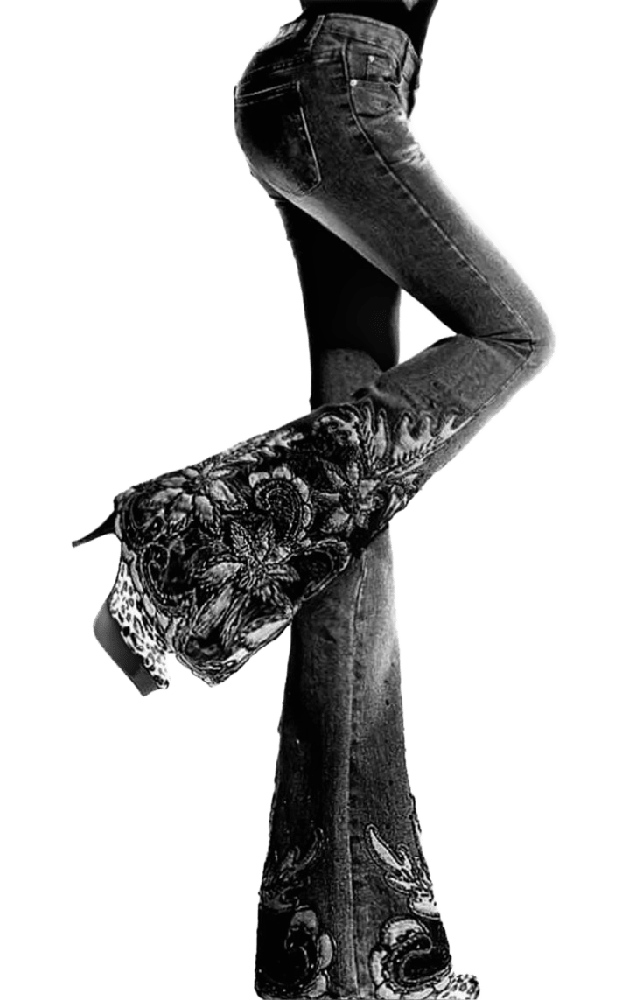
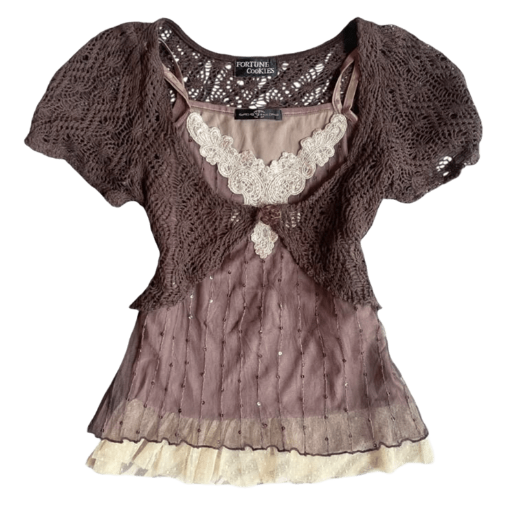
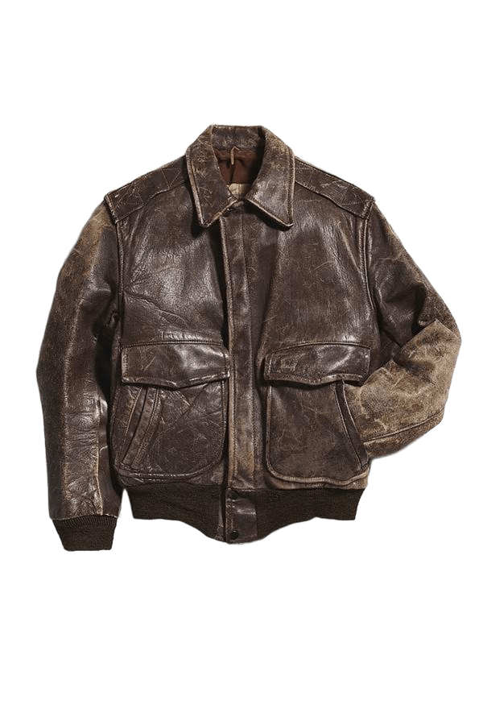

 <link rel="stylesheet" href="about_the_collection.css">

 <section>

 <body>
  
    <h1 class="h1">About the Collection</h1>

    <p class="p">The Vintage Vogue collection is a journey through the golden decades of fashion, when style was an art form. Inspired by the elegance of the 60s cinema, 
the effortless chic of the 70s, and the bold spirit of the 90s, each piece captures the essence of its era — bringing the rhythm of the past into the modern world.
This collection is for those who find stories in details, appreciate handcrafted quality, unique cuts, and natural fabrics. These garments don’t just dress — they speak.</p>

<div class="collection-about__gallery">






</div>

<a class="a" href="index.html">Back to home</a>

</body>

 </section>
